For Nianie ❤️
A little website I made just for you — a place for letters, reasons, and memories. Enjoy po!
Hello my love 🌸
This is your little corner on the web. You can read a letter I wrote, see reasons why I love you, browse my photos, and remember our wholesome moments. I hope this makes you smile — open anything you want.

Hi, baby! This is your favorite picture of me kaya dapat bungad siya
💌 My letter for you, baby
❤️ Reasons why I love you
📸 Our Pictures
Ito na muna sa ngayon. But, I hope someday we can have our photos together.
 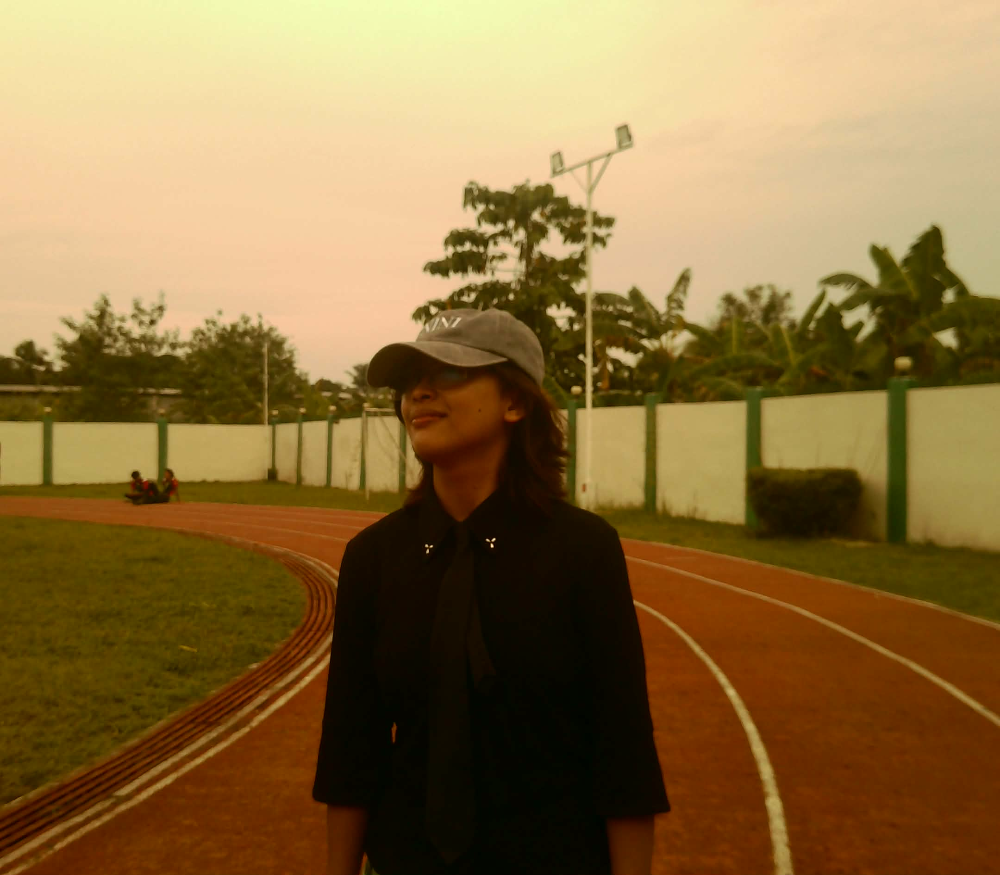
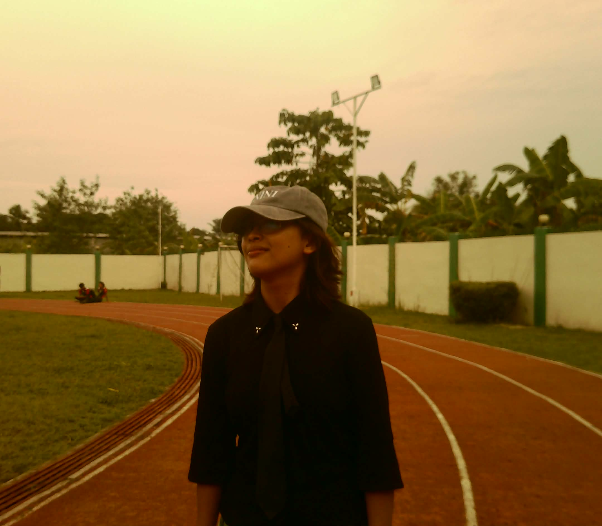
 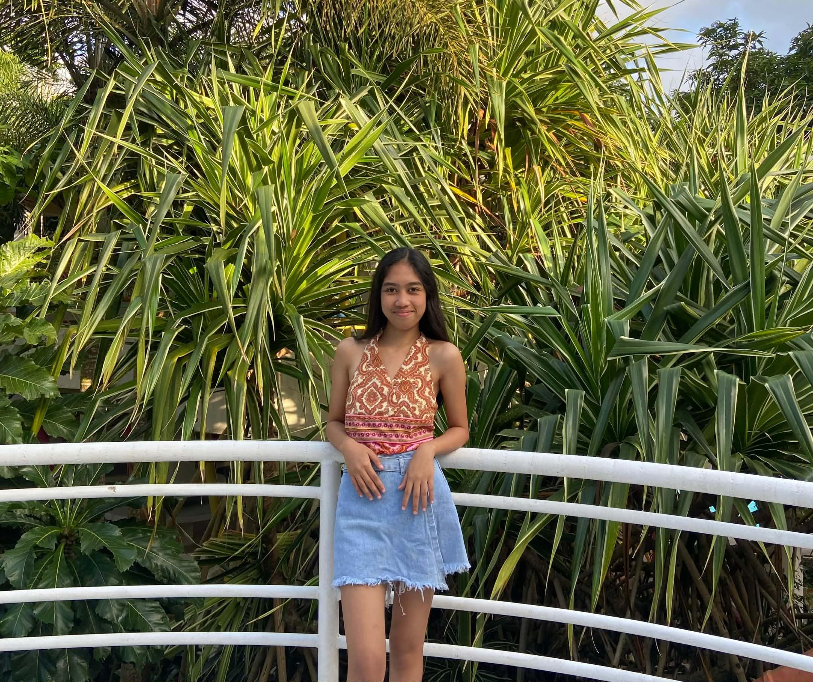
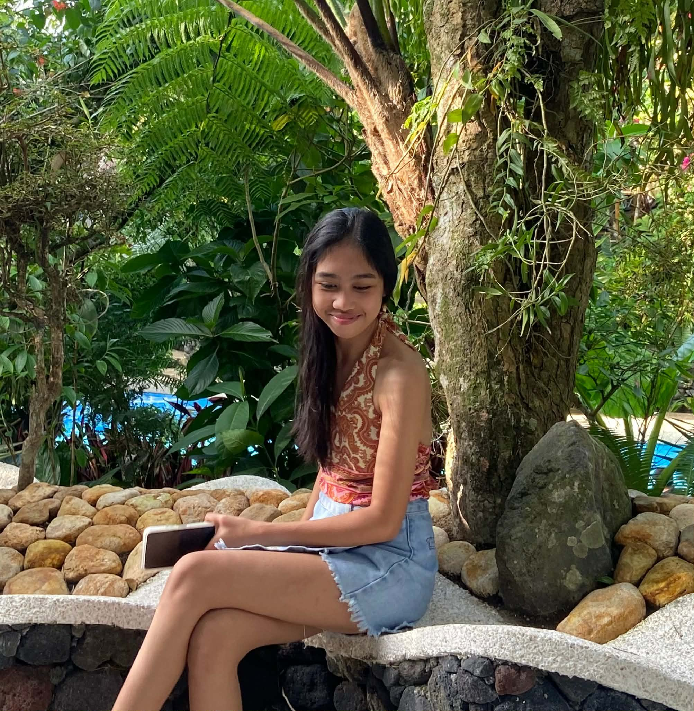
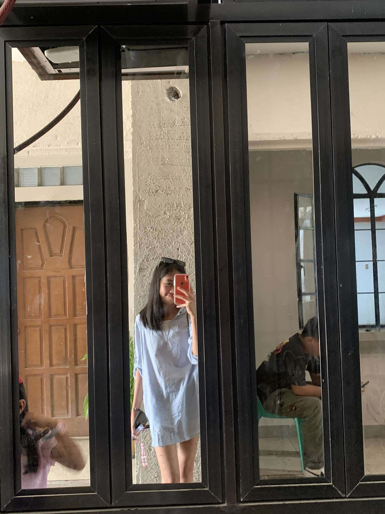
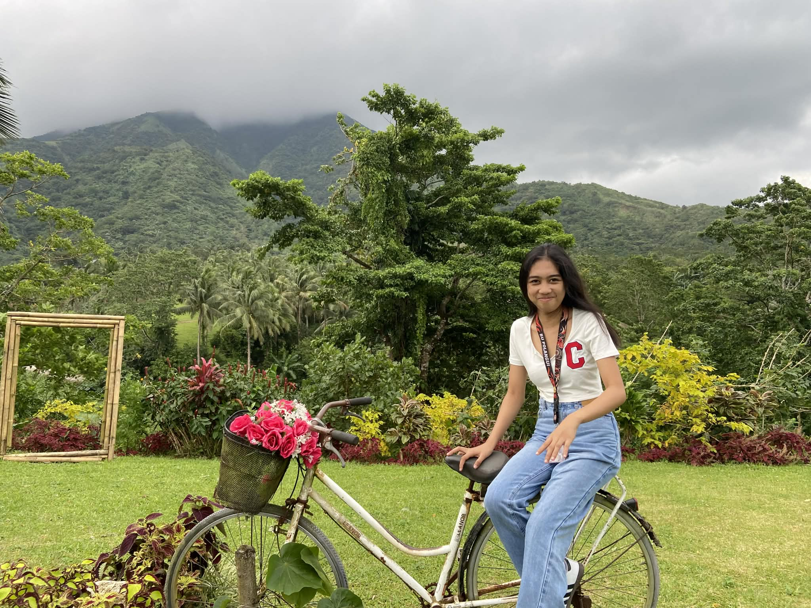
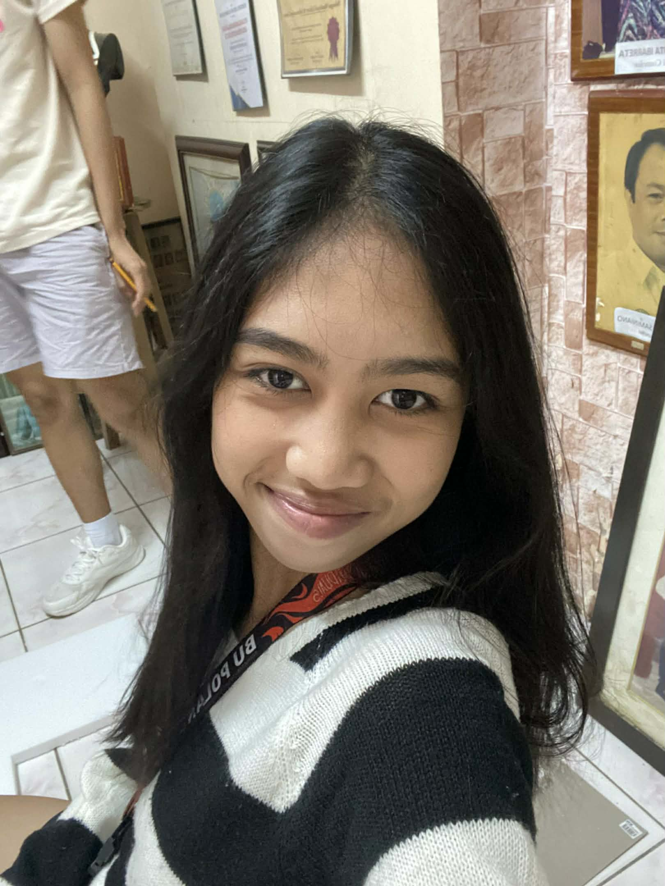
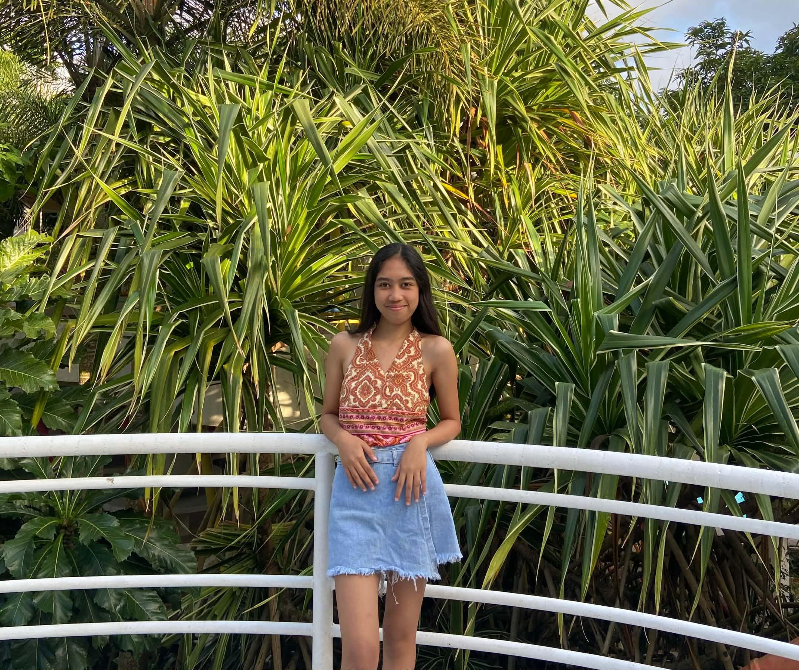
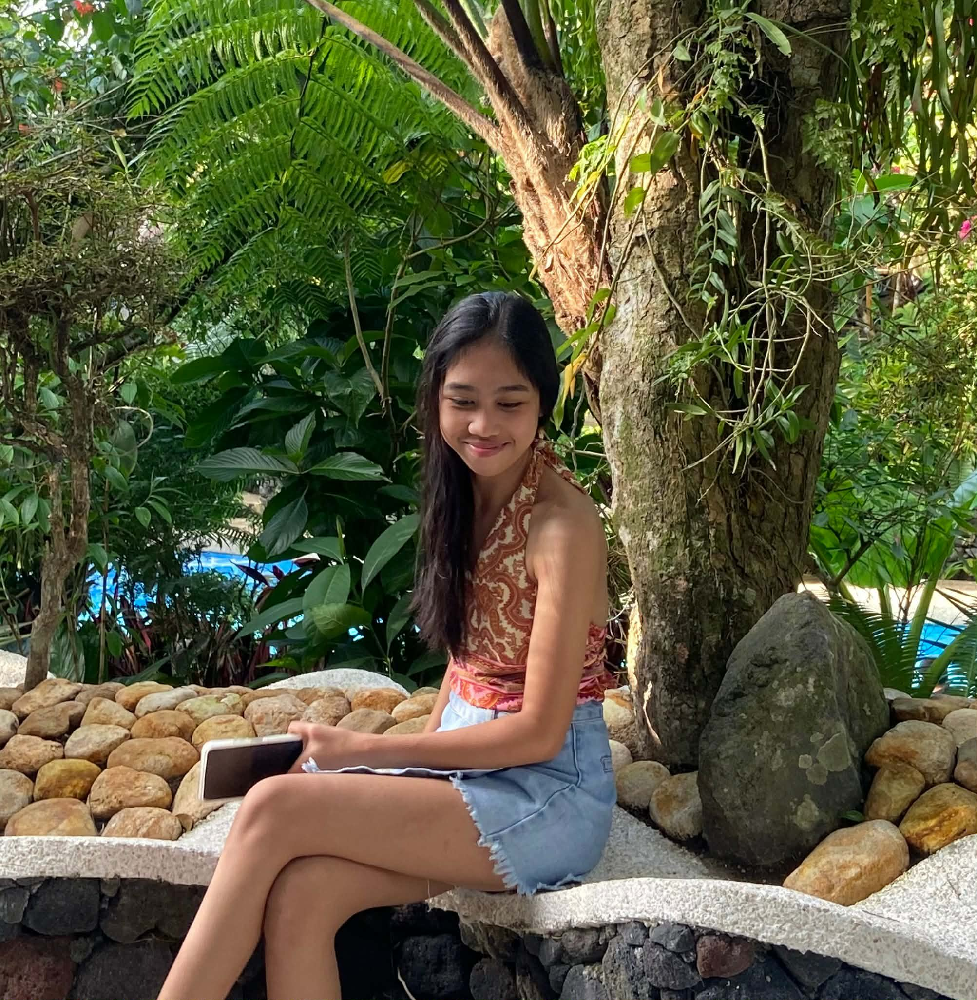
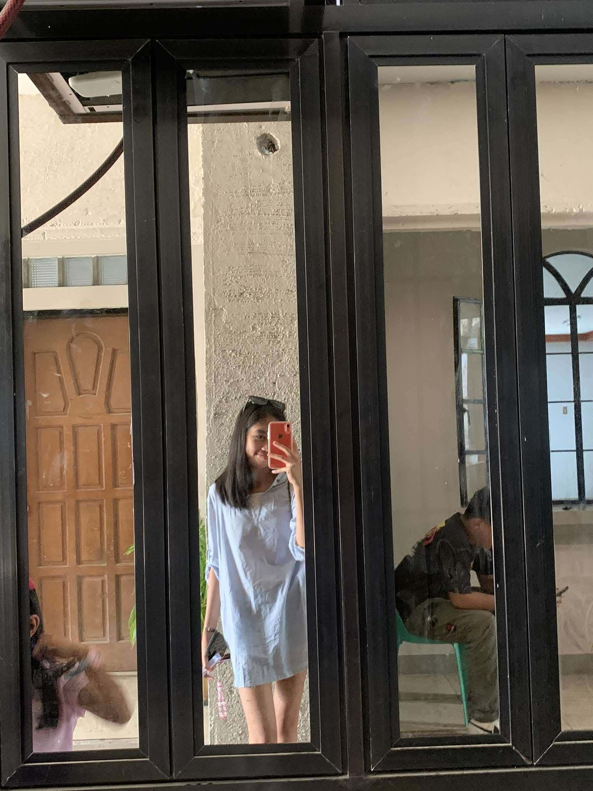
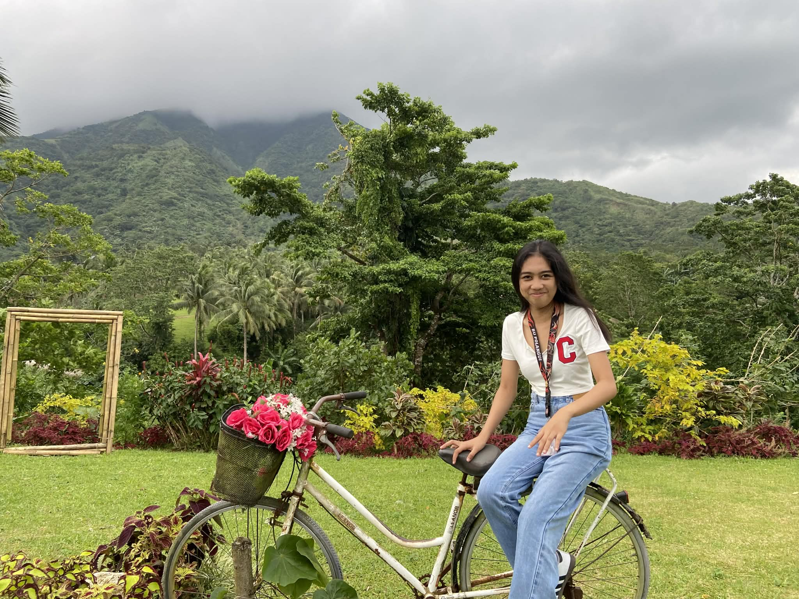
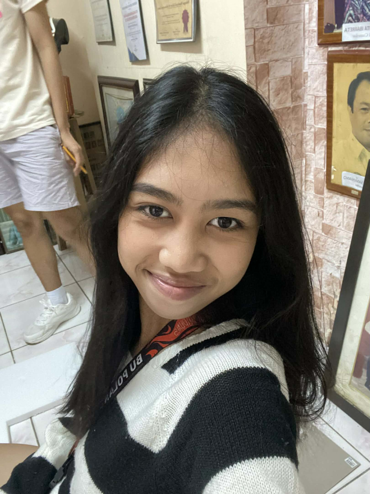


🧸 Our Wholesome Timeline
Mga moments that means so much to us.

Day we started talking
I never expected that this message of mine would change everything between us. At first, my intention was really just to have someone to talk to—someone who could listen, someone I could ask for advice about the decisions I was making in life. I didn’t think too much of it. It was supposed to be simple, casual, nothing special.
Pero habang tumatagal, something shifted. Our conversations didn’t feel forced. They weren’t just small talk. They felt natural—like we already understood each other long before we even tried to. I found myself looking forward to your replies, waiting for your name to pop up on my screen, and smiling at messages I never thought would matter so much.
Little by little, talking to you became a habit. A comfort. A part of my day I didn’t want to skip. I didn’t notice it at first, but you started to hold a place in my life that I didn’t expect anyone to fill. You were supposed to just be a person I talk to… yet somehow, you became someone I didn’t want to lose.
And that’s the part that surprised me the most.
From a simple message… everything changed.
And honestly, I’m grateful that it did.
The calls we never wanted to end.
Every call that lasted for almost 12 hours—those moments we never wanted to end. I still think about how strange and beautiful it is… how something so simple like a late-night call can become one of my favorite parts of our story. I don't even know why you always wanted to call, especially knowing that at first, you really didn’t like phone calls. To be honest, same. I didn’t like it either. But there’s something about you—something about us—that made those hours feel light, natural, and comforting.
You made me start to enjoy the things I used to hate. Alam mo naman na hindi ko talaga gusto ang boses ko, and I always felt shy about it. Pero ikaw? You didn’t just accept it—you made me like it. You made me love something about myself that I used to be insecure about. And I think that’s one of the things I treasure the most about you. You make the uncomfortable feel safe. You make the ordinary feel warm. And you make me feel seen, heard, and understood in a way I didn’t think was possible.
So every time we talk, every time you say, “Call?” even if it's late or we’re tired—I say yes. Not because of the call itself, but because it’s with you. And those hours… those laughs… those quiet moments… they’re something I never want to end either.
The FIRST TIME that YOU FLIRTED with me
Sabi ko sa sarili ko tropa lang — as in literal, friends lang, walang halo. Pero bigla mo na lang akong nilandi. At hindi ko alam kung matatawa ba ako o kikiligin sa sarili ko that time. Pero diba I admitted to you naman na you caught my attention since the very beginning. Pero hindi ko lang sinabi kasi we were young, busy sa studies, and parang wala pa talaga sa timing ang lahat.
We had interactions, yes. Nagkakausap tayo, nagbibiruan sa comsec. Pero hindi tayo yung tipong madalas mag-chat. Ako pa nga yung una at huling nag-chat and then seen na ang ending. I really thought na hanggang dun lang tayo—just two people who know each other, comfortable enough to talk, but not close enough to build something more.
I never expected that one day, everything would shift. Na yung simpleng biruan, yung “kailan kaya mag lelevel-up relasyon natin” na linya, is mag lelevel-up talaga HAHAHAHA. Hindi ko inakalang from being just friends, we'd end up here—choosing each other, being part of each other's lives in ways I didn’t see coming.
And galing, no? Sometimes the things we never planned are the ones that turn out to mean the most.
And honestly… I’m glad na nilandi mo ako.
The First "I love You"
I still can’t forget the first time we exchanged I love you’s. It didn’t feel rushed, it didn’t feel unsure — it felt real. Maybe ako nga yung nauna nagsabi ng “I love you,” pero ikaw ang unang nahulog. Ikaw yung unang nag-open nang totoo, nang walang takot, nang buong puso.
I can't forget this — “Please payagan mo akong mahalin ka.”
And something about those words stayed with me. Hindi siya basta linya lang. Hindi siya basta sweet moment. It was you, choosing me. You, asking to stay. You, asking to love freely.
And right there, in that exact moment, I knew — iyong-iyo na ako. Buo. Hindi kalahati. Hindi paunti-unti. Buo.
It wasn’t dramatic. It wasn’t loud. But it was deep — and it was ours.
That first “I love you” wasn’t just a confession. It was the beginning of us choosing each other — every day, in every small and quiet way.
When I'm Undecided, You're There
You were there during the time I wasn’t sure of myself. When I thought I was okay — when I thought kaya ko na ulit magmahal — pero hindi pa pala. I was still healing, still doubting, still scared to give my heart again. And I knew you didn’t deserve to receive only half of me. I knew you deserved something whole, something steady, something certain.
But you stayed.
You didn’t force me to rush. You didn’t make me choose when I wasn’t ready. Instead, you looked at me with patience — that gentle kind of patience na hindi nagsasawa. And you told me, “gusto kitang mahalin sa way na deserve mo.”
Those words… they softened everything inside me.
You didn’t just want to love me — you wanted to love me right.
You wanted to love me in a way that wouldn’t hurt, in a way that would heal, in a way that felt safe.
And that’s when I realized:
It wasn’t that I couldn’t love.
I just needed someone who would hold me carefully.
And you did.
You stayed even when it was messy.
You stayed even when I was unsure.
You stayed even when loving me meant waiting.
And that’s when I knew —
your love isn't loud, or rushed, or demanding.
Your love is patient.
Your love is gentle.
Your love chooses me, not just once, but every time.
 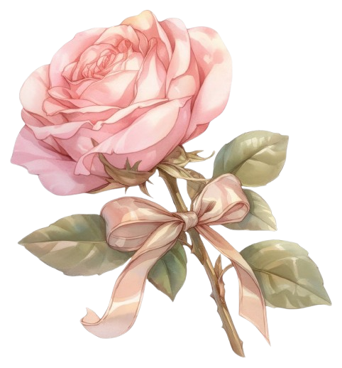
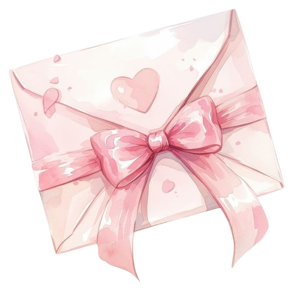
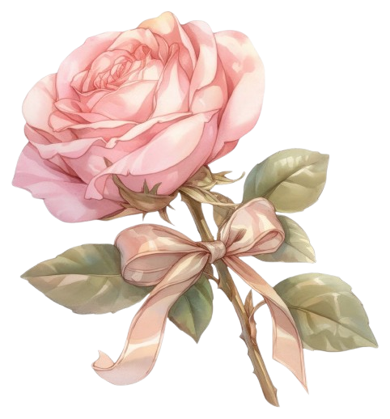
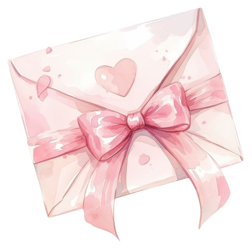
Humpy Dumpy 🧸
Hi, momma! I'm humpy your favorite baby. I love you but mommy loves you more! Play with me!